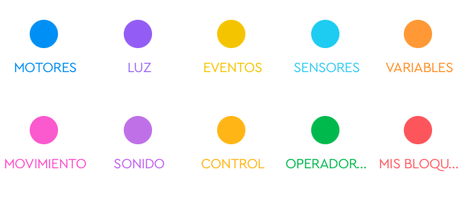
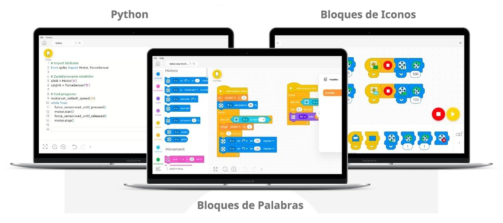
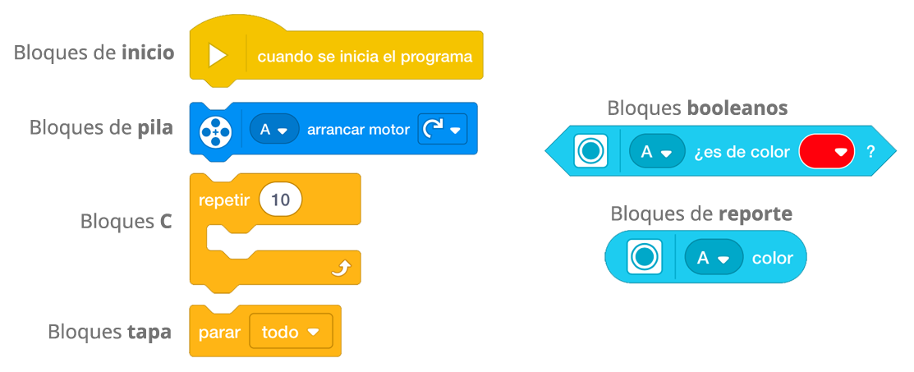

Cuando se crea un nuevo proyecto con Bloques de Palabra, se obtiene acceso a todos los bloques de
programación predeterminados, divididos en categorías familiares:
- Motores (control de un motor)
- Movimiento (control de dos motores)
- Luz (control de matriz de luz)
- Sonido
- Eventos
- Control
- Sensores
- Operadores
- Variables.
También está Mis Bloques, donde se pueden crear una nueva función a partir de los bloques de código
disponibles.

Nota: La dirección del movimiento en los bloques de movimiento se puede definir de dos maneras: con flechas o con números. Definir la dirección con números es más flexible y más preciso de los dos, sin embargo, es imposible retroceder. Esta opción está disponible solo en los bloques con flechas.
Como comentábamos en el tema anterior, se puede ampliar fácilmente esta selección habilitando las
extensiones: Gestión de Clima, Más motores, Más movimiento, Más sensores, Música, Gráfico lineal, Gráfico
de barras o Pantalla.
Estas extensiones amplían las posibilidades de programación, por ejemplo, utilizando potencia en lugar de
velocidad, colores crudos, posición relativa, etc.
También brindan opciones visuales adicionales, como formas alternativas de presentar datos o mostrar una
imagen en la pantalla.
De las tres formas de programar en SPIKE Prime, los Bloques de Palabras es la mejor para aprender programación para niños. Esto se debe principalmente a sus raíces, pero también a las amplias posibilidades de programación de los motores y sensores del kit.

Está lleno de potencial. Se puede seleccionar un puerto, definir la velocidad, la posición, el tiempo y la
dirección de rotación de los motores. Una nueva opción interesante permite al motor regresar a una posición
específica utilizando el camino más corto.
Cada sensor se puede usar al menos de varias maneras gracias a los bloques disponibles, y con los Sensores,
más extensión, puede detectar colores RGB sin procesar, medir la aceleración o la velocidad angular.
Además de las diversas posibilidades de creación de programas, los Bloques de Palabras permiten a los
usuarios aprender la sintaxis, es decir, las reglas que rigen sus elementos individuales, de forma orgánica.
El lenguaje de programación por Bloques de Palabras se compone de diferentes tipos de bloques, cada uno
representado por una forma diferente.
Las diferentes formas de los bloques sugieren sus posibles aplicaciones, al igual que las diferentes formas
de los ladrillos LEGO.

Los bloques sombrero se utilizan para iniciar un programa. Tienen una parte superior redondeada para que
otros bloques solo se puedan unir debajo de ellos.
Cada secuencia de comandos debe comenzar con un bloque de sombrero conectado a al menos un bloque de pila .

Los bloques de pila ejecutan los comandos principales de un programa. ¡Son los bloques que pueden hacer que los motores se muevan y las luces se enciendan!
Los bloques C son bloques en forma de C. Se colocan entre el principio y el final del ciclo o comprueban si
una condición es "verdadera". Todos los bloques C se pueden encontrar en la categoría Control.
Los bloques C representan un bucle, o una condición, y tienen un espacio en el medio para bloques de pila
adicionales.

Los bloques de reporte contienen valores, que pueden ser un número o una cadena. Entre otras cosas, pueden
mantener una lectura de sensor o almacenar el valor de una variable.
Este tipo de bloque deben combinarse con otros bloques para funcionar en un script.
Los bloques booleanos son condiciones que pueden ser verdaderas o falsas. Se utilizan junto con los bloques
C para formar la lógica de un programa.
Este tipo de bloque también deben combinarse con otros bloques para funcionar en un script.
Los bloques tapa se utilizan para finalizar los scripts. Tienen una forma con una muesca en la parte
superior y una base plana para que no puedas colocar bloques debajo de ellos.
Hay dos bloques tapa, ambos se pueden encontrar en la categoría Control.
Una pila de bloques es una serie de bloques que se han juntado unos con otros para formar un programa.
Los bloques de programación están agrupados por funcionalidad en los siguientes colores: